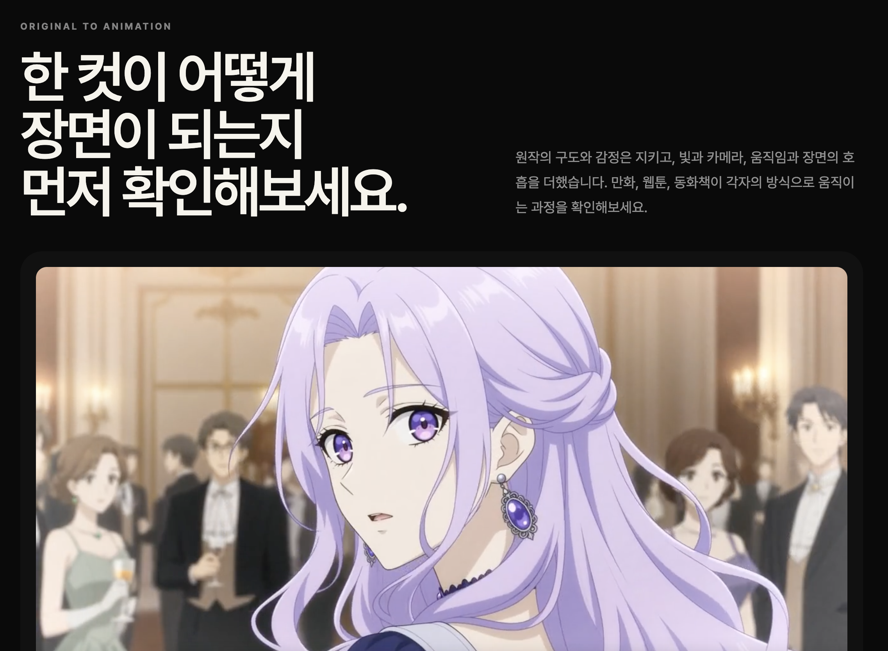
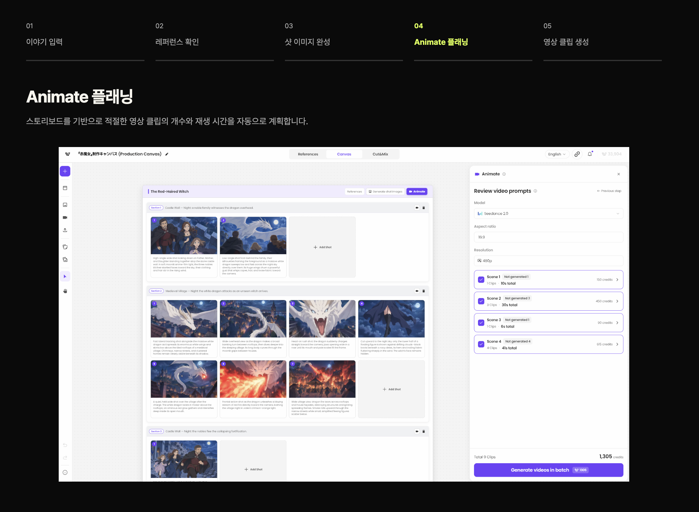
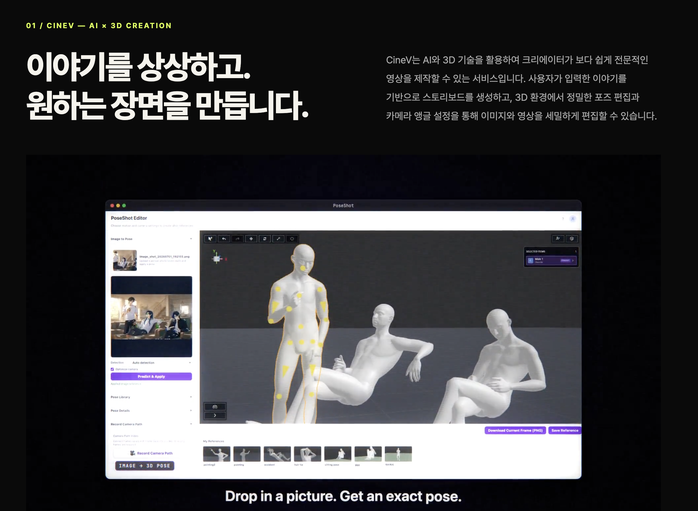
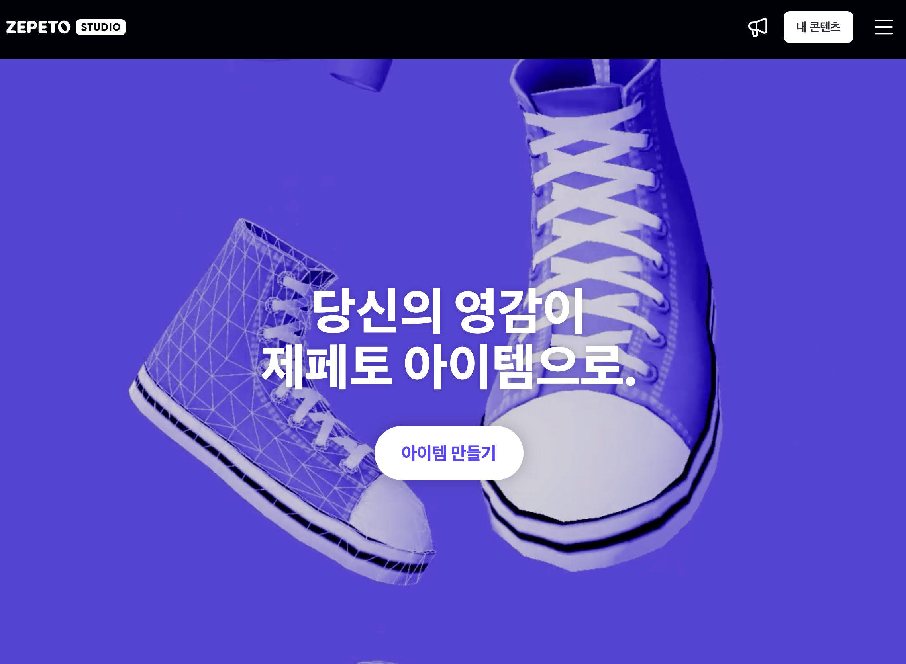
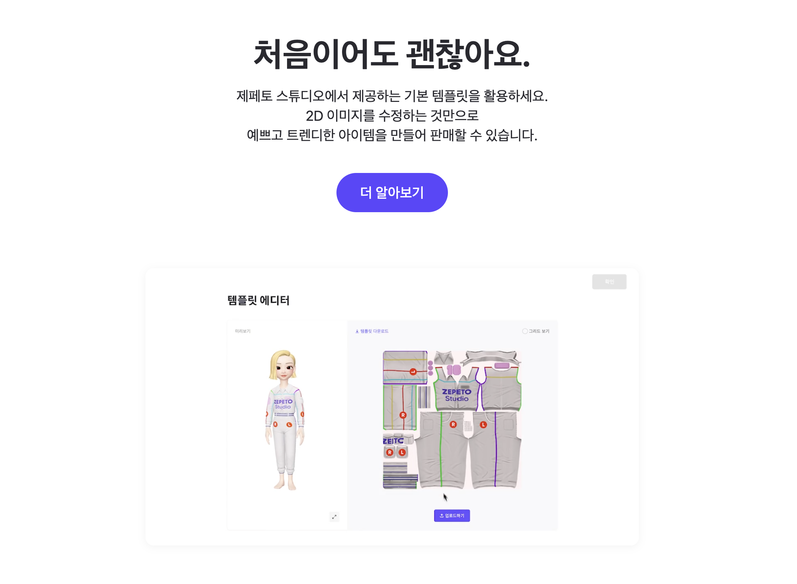
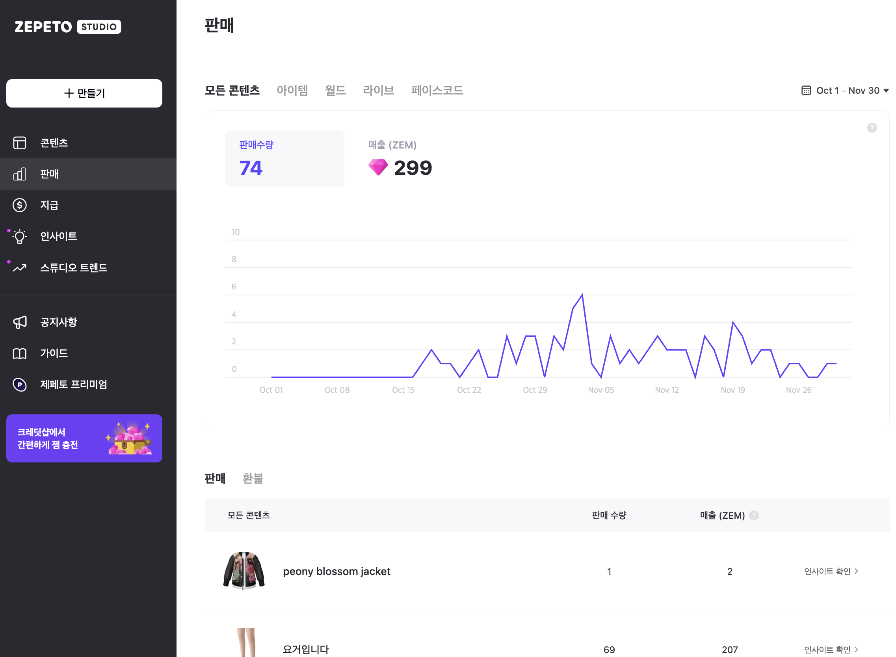

요약
커머스, 글로벌 콘텐츠 플랫폼, 크리에이터 생태계, AI 기반 SaaS까지 다양한 산업과 제품
단계에서 서비스 기획 및 제품 전략을 수행해 온 Product Leader입니다.
사용자 문제와 사업 기회를 발견하고, 이를 구체적인 제품 방향과 실행 가능한 요구사항으로
정의하는 데 강점이 있습니다. 서비스 초기 기획부터 MVP 출시, 제품 고도화, 사용자 성장 및
수익화까지 제품의 전 과정을 경험했습니다.
특히 플랫폼의 사용자 경험뿐 아니라 공급자와 크리에이터의 활동 구조, 콘텐츠
생산·유통·수익화 생태계, 운영 정책까지 함께 설계해 왔습니다. 크리에이터와 소비자를
연결하는 양면 플랫폼의 서비스 기획 및 운영 경험을 보유하고 있습니다.
최근에는 AI 및 3D 기술을 활용한 콘텐츠 제작 SaaS의 CPO로서 제품 전략과 로드맵을
수립하고, 기획·디자인·QA 조직을 리딩하며 기술 중심의 제품을 실제 사용자가 활용할 수 있는
서비스로 구현했습니다.
주요 역량
● Product Strategy: 제품 비전, 전략 및 로드맵 수립, 제품 목표와 KPI 정의
● Product Planning: 신규 서비스 발굴, 요구사항 정의, 정보구조 및 사용자 플로우 설계
● Platform Business: 크리에이터와 소비자를 연결하는 양면 플랫폼, UGC 및 콘텐츠
플랫폼 기획
● Business & Growth: 서비스 운영, 수익화 모델, KPI 관리, 사용자 성장 및 전환 개선
● Product Leadership: 제품 조직 리딩, 우선순위 및 의사결정, 개발·디자인·사업 조직
협업
● Technical Product Management: AI·3D 기술의 제품화, 복잡한 기술 및 제작
프로세스의 UX 설계
경력 기술
시나몬 (Cinamon)
- Chief Product Officer | 2023.09 – 2026.10
- Product Manager / Product Group Lead | 2023.05 – 2023.09
- Product Manager / Team Lead | 2021.01 – 2023.05
3D 및 생성형 AI 기반 콘텐츠 제작 서비스 CineV
CineV 작업 포트폴리오 : https://cinev.github.io/archive/



주요 역할
AI 기반 콘텐츠 제작 서비스의 제품 전략과 기획을 담당. 연구 단계의 AI·3D 기술을 실제
사용자가 활용할 수 있는 제품으로 구현하고, MVP 기획부터 출시, 제품 고도화 및 사업화 방향
수립까지 수행.
● 제품 비전 및 단기·중장기 로드맵 수립, 제품 목표와 기능 우선순위 결정
● AI 연구 결과 및 기술 역량을 기반으로 신규 제품 기능과 사용자 가치 정의
● MVP 범위 설정, 핵심 기능 요구사항 및 사용자 시나리오 설계
● 제품 UX/UI 방향과 핵심 워크플로우 설계 및 프로토타이핑
● 주요 릴리즈의 기획 의도 검증 및 최종 제품 Acceptance
● 사업 목표와 제품 로드맵을 연결하고 개발·디자인·마케팅 등 유관 조직과 협업
조직 리딩 및 협업
● 기획/PO 5~10명, 디자인 1~2명, QA 1~2명으로 구성된 제품 조직 리딩
● 제품 방향, 로드맵, 기능 우선순위 및 제품 의사결정 책임
● 개발 조직과 협업하며 제품 요구사항과 사업 목표를 개발 실행에 연결
주요 프로젝트
1. AI 콘텐츠 제작 서비스 제품 전략 및 MVP 출시
● AI·3D 기술을 활용한 콘텐츠 제작 서비스의 제품 방향과 핵심 사용자 가치 정의
● AI 기술을 활용한 콘텐츠 제작 기능의 제품화 및 사용자 제작 경험 설계
● MVP의 핵심 기능과 사용자 검증 목표를 정의하고 출시 범위 및 우선순위 결정
● 영상 생성, 3D Studio, Shot Editor를 연결하는 제품 구조와 사용자 제작 흐름 설계
● Image-to-Video(I2V) 등 생성형 AI 기능을 제품에 도입하고 기존 제작 경험과 연결
2. AI 영상 제작 End-to-End 워크플로우 설계
● 프롬프트 입력, 시놉시스, 캐릭터·배경 설정, 스토리보드, 영상 생성/편집으로 이어지는
전체 제작 과정 설계
● 생성 결과 개별 샷을 수정·재생성하고 완성할 수 있는 편집 중심 경험 설계
● 레퍼런스 이미지, 캐릭터, 배경 등 제작 요소를 재사용하고 관리할 수 있는 구조 기획
● 스토리보드 및 샷 단위의 제작 흐름과 편집 경험 설계
3. 제품 UX 고도화 및 기술의 제품화
● AI 이미지·영상 생성 및 편집 과정의 복잡성을 사용자 관점에서 재정의
● 스토리보드 및 캔버스 기반 제작 환경, 멀티샷 생성, 3D 포즈 레퍼런스 등 신규 기능
기획
● 개발 가능성과 사용자 가치를 고려해 기능별 우선순위를 결정하고 단계별 제품 범위
조정
● 기획 의도를 구체적인 프로토타입과 요구사항으로 전달하고 개발 결과물 검증
● 생성 실패, 프로젝트 관리, 편집 과정의 오류 등 실제 사용자 제작을 방해하는 문제 개선
4. 제품 성장 및 사업화 지원
● 신규 유입부터 가입, 첫 제작, 결제까지 이어지는 사용자 퍼널 및 핵심 지표 정의
● GA4 기반 사용자 행동 데이터 측정, 전환 지표 및 대시보드 구축 기획
● 랜딩 페이지, 온보딩, 튜토리얼, 이메일 캠페인 및 SEO 개선
● Stripe 기반 구독 및 결제 플로우, 크레딧 정책 기획
● 기업 고객을 위한 Organization Workspace 및 팀 단위 사용 환경 기획
● B2B 고객의 콘텐츠 제작 방식과 업무 요구사항을 조사하고 제품화 방향 검토
네이버제트 (NAVER Z)
제페토 크리에이터 플랫폼 (ZEPETO Studio)



주요 역할
기존 제페토 크리에이터 플랫폼의 서비스 기획 및 운영. 크리에이터의 아이템 제작·등록·판매
과정에서 필요한 사용자 경험과 운영 정책, 수익화 관련 기능을 담당.
주요 업무
● 크리에이터의 아이템 제작 및 업로드 과정에서의 사용자 경험 개선
● 아이템 등록 및 검수·승인 프로세스와 운영 정책 기획
● 크리에이터 수익화 및 정산 관련 정책과 기능 기획
● 플랫폼 운영 효율화를 위한 스튜디오 운영 도구 기획
● 크리에이터와 플랫폼 운영 관점에서 기존 서비스의 기능 및 프로세스 개선
스노우 (SNOW)
네이버제트(NAVER Z) 분사에 따라 소속 이동
봉봉 (vonvon)
서비스 기획 / Product Manager | 2015.05 – 2020.03
글로벌 콘텐츠 및 소셜 게임 플랫폼
주요 역할
웹, 모바일 앱, Facebook 게임 플랫폼 등 다양한 채널에서 콘텐츠 서비스를 기획하고 운영.
서비스별 전략 및 KPI 수립, 사용자 확보, 수익화 모델, 마케팅 및 운영 전반 담당.
조직 내 주요 기획 담당자로서 신규 서비스의 아이디어 발굴부터 기획, 출시, 성장 및 운영까지
제품 사이클 전반을 수행.
주요 업무
● 신규 콘텐츠 및 게임 서비스 발굴, 제품 전략 및 서비스 방향 수립
● 사용자 행동과 시장 특성을 고려한 콘텐츠 및 사용자 경험 기획
● 서비스별 KPI 정의 및 사용자 성장 지표 관리
● 광고 기반 수익화 및 서비스별 비즈니스 모델 기획
● 글로벌 사용자 대상 서비스 운영 및 다국어 서비스 확장
● 개발 및 디자인 조직과 협업하여 신규 서비스 출시 및 지속적인 개선
주요 프로젝트
1. vonvon – 글로벌 콘텐츠 플랫폼
● 퀴즈, 심리 테스트 및 게임 등 다양한 콘텐츠 서비스 기획 총괄
● 콘텐츠 소비와 공유를 유도하는 사용자 경험 및 서비스 구조 설계
● 15개 언어로 서비스 확장 및 글로벌 사용자 대상 서비스 운영
● 월 사용자 수천만 명 규모의 글로벌 콘텐츠 서비스 성장 및 운영
2. Facebook Instant Games – 글로벌 소셜 게임
● Facebook Instant Games 플랫폼 내 다양한 소셜 게임 기획 및 사업 총괄
● 친구와 함께 즐기고 결과를 공유할 수 있는 소셜 게임 UX 기획
● How Well Do You Know Me, Never Have I Ever 등 다수의 게임 서비스 출시
● MAU 1,000만을 달성한 게임을 포함한 글로벌 게임 서비스 운영 및 성장
3. Quizjam – 퀴즈 UGC 플랫폼
● 사용자가 직접 퀴즈를 제작하고 공유할 수 있는 UGC 서비스 기획
● 사용자 제작 콘텐츠의 생성 및 소비 경험 설계
4. 인플루언서 재능 커머스
● 소셜미디어 인플루언서가 팔로워에게 자신의 재능과 콘텐츠를 유료로 제공할 수 있는
모바일 서비스 기획
● 일대일 채팅 및 미디어 공유를 기반으로 한 서비스 구조 설계
● 콘텐츠 제공자와 소비자 간 거래 및 수익화 경험 기획
티몬 (TMON)
주요 프로젝트
1. 패션 소호샵 통합 서비스
● 여러 패션 소호샵의 상품을 통합적으로 탐색하고 구매할 수 있는 커머스 서비스 기획
● 분산된 판매자 상품의 통합 노출, 결제 및 배송 경험 설계
● 사용자 구매 편의성과 판매자 상품 유통 효율을 고려한 서비스 구조 기획
● 서비스 운영 정책 및 운영 계획 수립
2. 티몬나우 – 실시간 음식점 바우처 서비스
● 점포의 실시간 운영 상황을 기반으로 즉시 이용 가능한 음식점 상품을 제공하는 서비스
기획
● 사용자가 현재 이용 가능한 음식점을 탐색하고 할인 바우처를 구매할 수 있는 UX 설계
● 실시간 판매 상품 및 점포 운영 특성을 고려한 서비스 운영 정책 기획
3. 티몬마트
● 티몬마트 서비스 기획
4. 통합 검색 서비스
● 티몬 통합 검색 서비스 기획
학력
고려대학교
심리학과 학사 | 2006.03 – 2013.02
부산외국어고등학교
프랑스어과 | 2003.03 – 2006.02